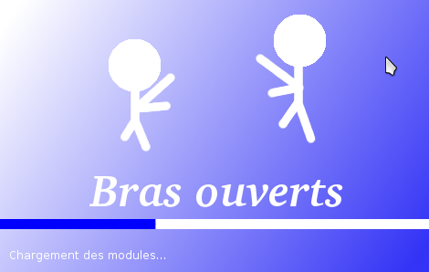
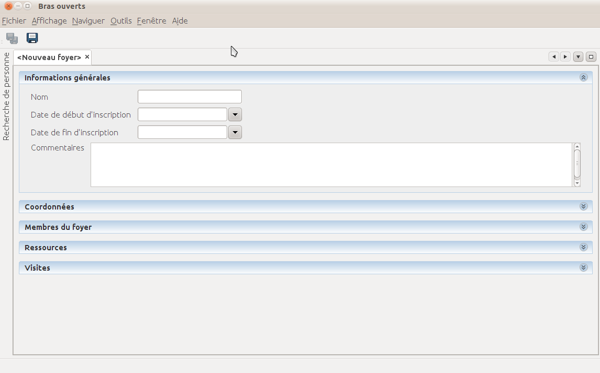
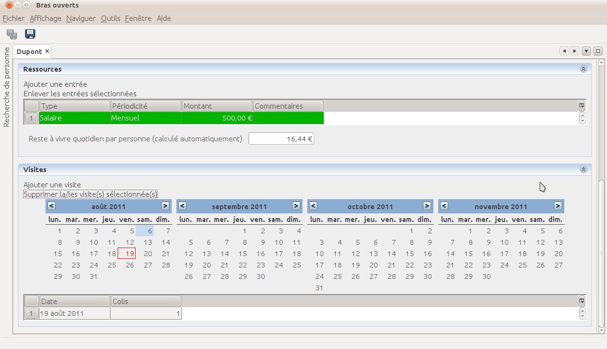
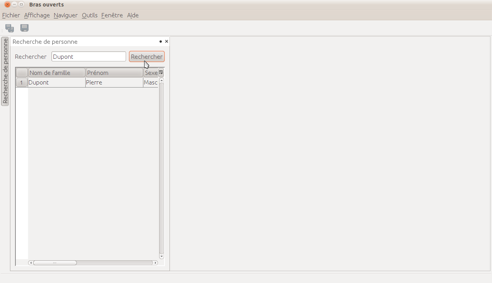
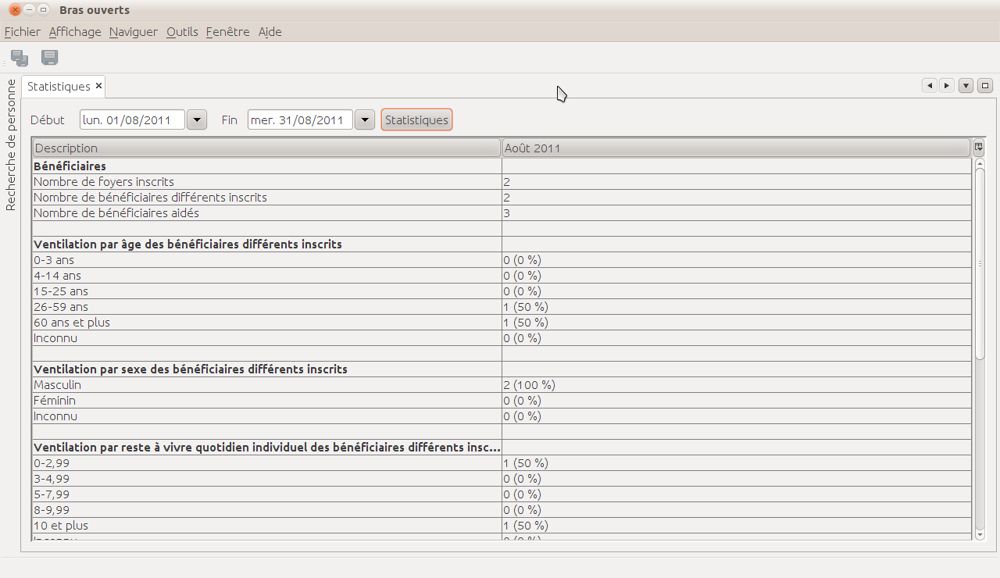

Bras-ouverts
Description:
Bras-ouverts est une application pour gérer la distribution de colis alimentaires pour des personnes avec peu de ressources.
Lien vers le logiciel:
http://divde.free.fr/brasouverts/brasouverts.zip
Utilisation:
Décompressez le contenu complet du fichier zip dans un
répertoire de votre ordinateur, et lancez le fichier brasouverts.exe
depuis le dossier bin.
Le logiciel démarre:

Puis l'écran principal s'affiche:

Pour enregistrer un nouveau foyer, cliquez sur "Nouveau foyer" dans
le menu "Fichier":

Chacune des sections "Informations générales", "Coordonnées",
"Membres du foyer", "Ressources" et "Visites" contient des champs à
remplir:

La dernières section, "Visites", permet d'indiquer quand la famille
est venue et le nombre de colis correspondants.
Pour ajouter une date de visite, cliquez sur la date de la visite
dans le calendrier, puis sur "Ajouter une visite", ou bien, de façon
équivalente, cliquez sur une date dans le calendrier, en maintenant
la touche majuscule enfoncée.

Cliquez sur le bouton "Enregistrer" pour conserver le nouveau foyer
dans la base de données. Il est ensuite possible de rechercher les
personnes enregistrées en cliquant sur le bouton "Recherche de
personne", sur la gauche (ou dans le menu "Fenêtre"):

Enfin, il est possible d'afficher les statistiques en cliquant sur
"Statistiques" dans le menu "Fenêtre". Il faut ensuite sélectionner
la date de début et de fin, et cliquer sur le bouton "Statistiques":

Le programme est open-source, écrit en langage Java. Le code source (pour les programmeurs) est accessible à cette adresse:
https://github.com/davdiv/Bras-ouverts-old